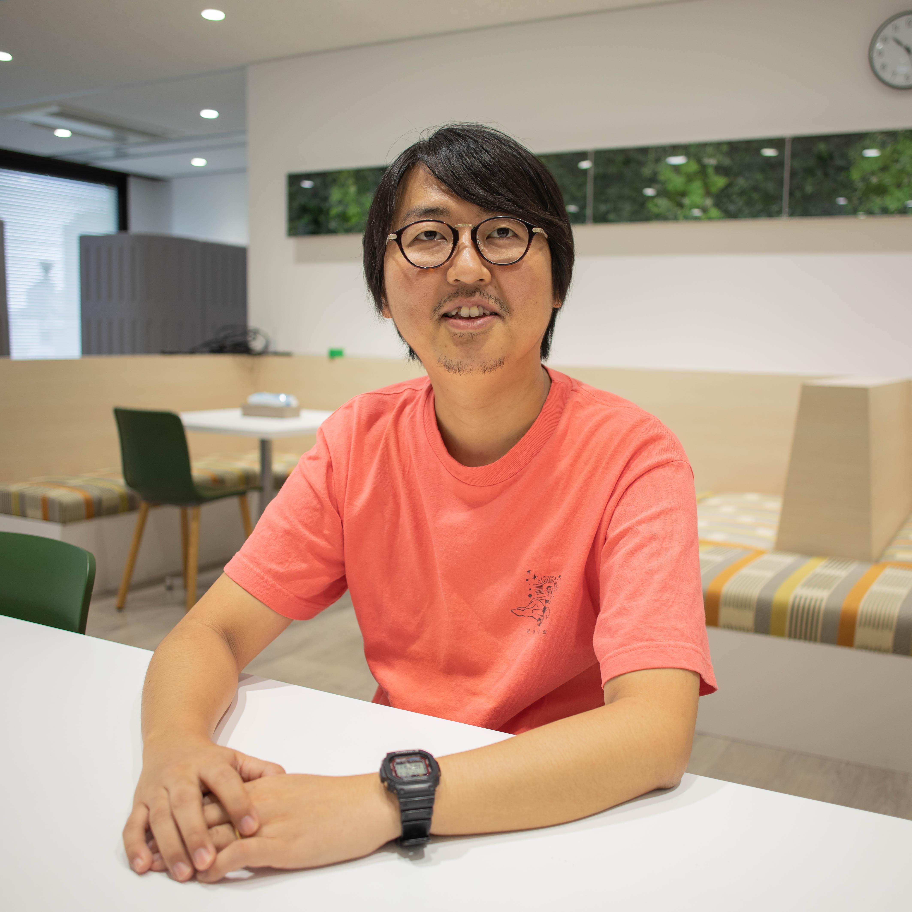

11:00 START
Hall 11:00〜
テスト駆動とエンジニアリング組織
和田 卓人 (わだ たくと)
タワーズ・クエスト株式会社プログラマ、テスト駆動開発者
学生時代にソフトウェア工学を学び、オブジェクト指向分析/設計に傾倒。執筆活動や講演、ハンズオンイベントなどを通じてテスト駆動開発を広めようと努力している。 『プログラマが知るべき97のこと』（オライリージャパン、2010）監修。『SQLアンチパターン』（オライリージャパン、2013）監訳。『テスト駆動開発』（オーム社、2017）翻訳。 power-assert-js 作者。
 @t_wada
@t_wada
Room 1 11:00〜
Podcastという組織戦略
Podcastという組織文化戦略 / fukabori.fm ・ajito.fmは組織にどんな影響があったのか、公開ポッドキャストの意義について語り尽くす。＜パネラー＞
岩瀬 義昌 (いわせ よしまさ)
fukabori.fmNTT国際通信株式会社 / NTTコミュニケーションズにて、 WebRTCプラットフォームであるSkyWayの開発・運用や、社内のエンジニア支援に携わるソフトウェアエンジニア。 また、技術者向けPodcastであるhttp://fukabori.fm のパーソナリティ。
@iwashi86
鈴木 健太 (すずき けんた)
ajito.fm株式会社fluct CTO。ajitofmパーソナリティ。広告周りのエンジニアリングをしています。共著に「みんなのGo言語」「データ分析基盤構築入門」など。
@suzu_v

Room 0 11:00〜
正しいものを正しくともにつくる
市谷 聡啓 (いちたに としひろ)
ギルドワークス株式会社株式会社エナジャイル
DevLOVE
サービスや事業についてのアイデア段階の構想から、コンセプトを練り上げていく仮説検証とアジャイル開発の運営について経験が厚い。プログラマーからキャリアをスタートし、SIerでのプロジェクトマネジメント、大規模インターネットサービスのプロデューサー、アジャイル開発の実践を経て、ギルドワークスを立ち上げる。それぞれの局面から得られた実践知で、ソフトウェアの共創に辿り着くべく越境し続けている。訳書に「リーン開発の現場」、著書に「カイゼン・ジャーニー」「正しいものを正しくつくる」がある
@papanda
12:10 START with LUNCH
Hall 12:10〜
プロジェクトマネジメントを武器に働こうとしていたら、組織/チーム作りを武器にしたくなった話
LINEの社内向けクラウドサービスプラットフォームの開発組織では、私が入社した2018年5月から月に1人以上のペースでメンバーが増え、現状は4拠点で60名近くとなっています。 多拠点/多言語が当たり前のLINEで全社横断的にプロジェクトマネジメントをサポートする部門に籍を置き、インフラ組織でプロジェクトマネジメントをやることになった私が、チームがより楽しくコラボレーションして開発ができる組織を目指し、プロジェクトの可視化やプロセス改善、スクラム導入、チームビルディングに挑戦したストーリーを、その時々の課題とそこから得た教訓を交えてお話いたします。また、プロセスやチームに向き合う私自身のマインドセットがどのように変わってきたのかもお話できればと思います。
Room 1 12:10〜
大規模組織からスタートアップまで、楽天のマネジメントの多様性
楽天グループは、イノベーションを通じて人々と社会をエンパワーメントすることをミッションに掲げています。Eコマース、FinTech、デジタルコンテンツ、通信など70以上のサービスを展開し、世界約13億人のユーザーに利用されています。今回のセッションでは、楽天の中でも大規模な楽天市場の開発組織と、同じ会社の中でも全く毛色の違うスタートアップ系サービスの開発組織それぞれについてお話します。同じ会社の開発組織でも全く異なる2つのマネジメント、それぞれどのように開発組織と向き合ってきたか、またそれぞれにおける挑戦、変革、戦いなどできるだけ事例を交えながら楽天のマネジメントの多様性についてお伝えできたらと思います。絹川 達也 (きぬがわ たつや)
楽天株式会社ECインキュベーション開発部 General Manager
ベンチャー企業２社にて営業、編成、事業開発などを経験の後、楽天大阪支社に入社。いくつかのサービスのプロデューサーを経験後、大阪・仙台・名古屋の開発拠点のマネジメントに従事。現在、ECインキュベーション開発部のジェネラルマネージャーとして『ラクマ』『楽天ペイ オンライン決済』『楽天車検』など、複数サービスの開発部署のマネジメントを担当。
河村 真 (かわむら まこと)
楽天株式会社ECマーケットプレイス開発部 Vice General Manager
楽天株式会社 ECマーケットプレイス開発部 ヴァイスジェネラルマネージャー。多国籍企業での大規模ソフトウェア開発の各種マネージメントやスタートアップのCTOを経て2018年楽天株式会社入社。現在楽天市場サービスのアーキテクチャおよび次世代プラットフォームの開発推進を担当。
@rakuten_tech
Room 0 12:10〜
筋肉質なエンジニア組織を目指して ~失敗と成功から学ぶエンジニア組織の作り方~
私がSansanに入社してから現在至るまでの個人向け名刺アプリEightの開発組織の変遷と、そこで自身が体験した失敗や成功についてご紹介します。また、それらの体験を現在の立場から俯瞰し、一般論を交えつつ、私自身が考えている、成果を出し続けることができる目指すべきエンジニア組織像についてご紹介いたします。に鈴木 康寛 (すずき やすのり)
Sansan株式会社Eight事業部 Chief Engineering Manager
2013年 Sansan株式会社に入社。 Eight事業部でRailsにてバックエンドの開発に従事する。 Redshiftを用いたKPI取得の仕組みを開発し、データ規模が拡大する現在でもパフォーマンスを維持する基盤を築いた。 その後、Eightの基本的な機能であるつながり処理の改善やビジネスネットワークの第一歩となるフィード機能のプロトタイプ開発を行い、ニュース配信機能やレコメンド機能改良等の開発を先導し、自らも実装に参画した。 上記レコメンドアーキテクチャ刷新事例としてAWS Dev Day 2017に登壇。 現在はチーフエンジニアリングマネージャーとして、Eight開発組織の課題解決に従事。
13:05 START
Hall 13:05〜
社員100人規模のWebサービスにおけるエンジニアリングマネジメント
スタートアップ企業が、初期の明日が見えないフェーズから徐々に組織として成立し、その組織の成長を作るためにマネジメントを強化していく中で、様々な課題が起こります。社員である開発者がエンジニアリングマネジメントのスキルや経験を獲得していく話やCTOの役割の変化を通じて、皆様のキャリアの視野を広げエンジニアリングマネジメントに挑戦する人たちを増やしたいと考えています。藤川 真一 (ふじかわ しんいち)
BASE株式会社取締役 EVP of Development
FA装置メーカー、Web制作のベンチャーを経て、2006年にGMOペパボに入社。07年から個人でモバイル端末向けのTwitterウェブサービス型クライアント『モバツイ』の開発・運営を開始。10年、想創社を設立し、12年4月まで代表取締役社長を務める。14年8月からBASE株式会社のCTOに就任。2019年7月、同社CTOを退任しEVP of Development ならびにグループ会社のPAY株式会社 取締役に就任。 17年9月に慶應義塾大学大学院メディアデザイン研究科博士課程を単位取得満期退学、18年1月博士（メディアデザイン学）取得、同学科研究員。
@fshin2000 @binc_jp
Room 1 13:05〜
なんとなくチームを構成することから脱却する方法
良いプロダクトを作るためには、良いチームが必要です。 良いチームになるためには、組織として適切なチームをデザインできていることがポイントです。 これは、スクラムをやるためにスクラムチームを作るのではなく、今所属しているメンバーを見て、最良のプロダクトを届けるためのチームをデザインするということです。 このためには、プロダクトの性質、メンバーのスキル、デプロイ頻度、開発拠点、文化など、様々な観点を考慮しなければいけません。 しかし、これら観点が全てベストな状態であるチームを構成出来ることはまれで、ほとんどの場合、何かしらのトレードオフを受け入れながら構成していかなければなりません。 例えば開発拠点が2つにまたがっているとき、拠点ごとにチームを作るのは良くあるやり方ですが、機能を実装するのに1つの拠点では完結しない場合はこのやり方がベストとは限りません。拠点をまたいでチームを作る、という方法もあります。しかし、この場合はコミュニケーションコストが上がるのでそれを下げるような制度や設備があるかどうかを考慮する必要があります。今回の発表では、アカツキで直面したゲーム開発チームにおけるトレードオフの関係をしながら、どのようにチーム構成を組んだのか可視化していきます。
湯前 慶大 (ゆのまえ よしひろ)
株式会社アカツキVP of Engineering
2010年に大手電気メーカーに新卒で入社。社会インフラ向けのLinuxカーネルの研究開発に従事。 2014年に株式会社アカツキに入社し、モバイルゲームのクライアントエンジニアとしてアプリ開発に従事。その後、モバイルゲームの新規開発タイトル・運用タイトルのエンジニアリングマネージャーを歴任し、2017年にVP of Engineeringに就任。 現在は、新規開発タイトルのエンジニアリングマネージャーに従事しながら、スケールアップとスケールアウトを意識したエンジニア組織のアップデートを図っている。
@akatsukiPR @yunon_phys
Room 0 13:05〜
クライアントワーク企業でもできるエンジニアリング組織のつくり方
お客様先に常駐するSES形態の業務がメインである会社では、エンジニアリング組織をつくることが難しいと考えられています。働き方の制約がある中でも、問題を直視することで組織を変え、エンジニアの文化をつくっていくことができます。10年間に渡る組織の変遷とその取り組み、立ちはだかった壁とそれをどう乗り越えたのか。また、どのような課題が残っているのか、について率直にお伝えします。永江 耕治 (ながえ こうじ)
株式会社エーピーコミュニケーションズ取締役副社長
1973年生まれ、神奈川県育ち。青山学院大学卒業後、Web制作会社勤務を経て、2002年株式会社エーピーコミュニケーションズに入社し、2008年執行役員に就任。2012年には業務の傍らMBA（中央大学大学院人的資源管理専攻）を取得。 プログラマー、インフラエンジニアを経て、マネジメント業務にシフト。事業責任者を経験した後に、人事部門に異動して組織・人材開発・人事制度リニューアルの業務に7年間携わった。再び事業責任者に戻り、2018年より取締役副社長に就任。
@Kooozii
14:00 START
Hall 14:00〜
メルカリ・メルペイのエンジニアリング組織の変化
〜Engineering Managerの視点から〜
メルカリ・メルペイは、数百名を超えるエンジニアがチームで開発を行っています。今回は、メルカリのBackendチームを率いるEngineering Managerが、事業成長と組織の拡大、マイクロサービス化といったトピックを中心に、現場のリアルとどう向き合ってきたのかをお話します。 また、メルペイのiOSチームを率いるEngineering Managerからは、メンバーの多様化※ が進む中で発生した課題、乗り越えたこと、将来的にどのようなチームにしようと考えているのかについてお話します。 ※ 多様化の例：バックグラウンド（メーカー、ゲーム、Ad Tech、SI、他FinTech…）・母国語（中国語・英語・日本語・フランス語）・国籍がバラバラ

後藤 秀宜 (ごとう ひでのり)
株式会社メルカリEngineering Manager（Backendチーム）
PHPメンターズでソフトウェア設計を中心に活動していた。2018年11月に株式会社メルカリに入社後はマネージャー職に。メルカリJP BackendチームのEngineering Managerとして、メルカリ本体をモノリスからマイクロサービスへ移行するプロジェクトにも関わっている。システムと組織の両面での変革に奮闘中。
石川 直樹 (いしかわ なおき)
株式会社メルペイEngineering Manager（iOSチーム）
ヤフー株式会社、株式会社イグニスを経て、2016年5月にiOSソフトウェアエンジニアとしてメルカリに入社。メルカリJP/USアプリの開発に携わった後、2018年1月にメルペイへ。現在はiOSチームのEngineering Managerを務める。
Room 1 14:00〜
自分らしいリーダーシップの形
マネージャーと呼ばれる人たちが自分らしいリーダーシップの形を獲得するのはとても大事だと思っていて、それを私が試行錯誤した話をしようと思います。 マネージャーの在り方の本などは多くありますが、どれも自分に合うかどうかは試行錯誤しなくてはならないので、どのように試していけばいいのかわからないことも多いです。今回はその一例を皆さんに共有出来たら参考になるかなと思ってお話しさせていただきます。山崎 遼介 (やまざき りょうすけ)
freee株式会社エンジニアマネージャー
freeeにてエンジニアマネージャーをやっています。普段は開発したり、スクラム回したり、設計したりしています。エンジニア業の傍らコーチ業も行っており、社内や社外で相談を受けています。
@freeeDevelopers @moaieee
15:00 START
Hall 15:00〜
ミクシィのマネージャーは悩んでいる
ミクシィグループには規模やフェーズの異なる様々なサービス・部署があるため、EMが抱える悩みも多様です。そこでこのセッションでは、各部署のEMにインタビューとアンケート集計を行なった結果をもとに、「家族アルバム みてね」のEMを務める酒井が、これまでの経験を元に各部署のEMが抱える悩みに対して回答しながら、みなさんにミクシィのEMが抱える悩みと現実を共有します。

酒井 篤 (さかい あつし)
株式会社ミクシィみてね事業部 開発グループ マネージャー
2011年11月 株式会社ミクシィ入社。2014年より「家族アルバム みてね」の開発を開始。現在は同サービスのSREとグループのエンジニアマネージャーを兼任しています。
@mixi_engineers
16:00 START
Hall 16:00〜
チャットコミュニケーションの問題と心理的安全性の課題
中山 ところてん (なかやま ところてん)
株式会社NextInt雑用係
通信会社の研究所にて情報セキュリティやビッグデータ基盤の研究開発に従事。その後、ソーシャルゲームの分析や企画、機械学習を利用したECの販促支援ツールの開発を経て、株式会社NextIntを起業。現在は機械学習のコンサルティングや、新規事業企画サポート、ゲームディレクターを行いつつ、グループソーシャルブックマークのVeinの開発を行っています。
@tokoroten
Room 1 16:00〜
レガシーコードからの脱却
ソフトウェアは、それが役にたっていれば、さまざまな変更が加わります。 変更は安価で容易に行えなければいけませんが、残念ながらそうなっていないことが多いのが実情です。 本セッションでは、いかにして変更が容易なコードを書くか、つまりいかに最初からレガシーコードを作らないようにするかについて同名書籍の内容をもとに解説します。吉羽 龍太郎 (よしば りゅうたろう)
株式会社アトラクタ取締役CTO/アジャイルコーチ
アジャイル開発のコーチングやトレーニングに従事。Scrum Alliance認定チームコーチ(CTC)。Microsoft MVP for Azure。 野村総合研究所、Amazon Web Servicesなどを経て現職。
著書に『SCRUM BOOT CAMP THE BOOK』など、訳書・監訳書に『レガシーコードからの脱却』『Effective DevOps』など多数。
@ryuzeeBlog: http://www.ryuzee.com/
Room 0 16:00〜
学習する組織の作り方
古川 陽介 (ふるかわ ようすけ)
株式会社リクルートテクノロジーズNode.js Core Contributor, Representative Director of Japan Node.js Association, Senior Software Engineer/Group Manager of Recruit Tech.
@yosuke_furukawa
Room 4 16:00〜
EM Meetup vol,#7-1
EM Meetupで行われている、Open Space Technologyというアンカンファレンスの手法を用いる。来場者が主体的に参加して議論を起こしていくことで、エンジニアリングマネージメントの意識や学習が生まれ、ここからあたらしい、EM FMのような活動を生み出す。 全ての始まり、きっかけを作ったムーブメントに一部にぜひ参加ください。
大庭 直人 (おおば まさと)
Quipper LtdEngineering Manager / Engineering Manager Meetup Organizer
2017年にEngineering Manager就任。2018年よりEngineering Manager Meetupを主催。各社でのエンジニア組織やマネージャーの実践・挑戦・知見・失敗話の共有と議論の場を提供している。
@ohbarye17:00 START
Hall 17:00〜
業界別マイクロサービスアーキテクチャいろいろ
＜パネラー＞
横路 隆 (よこじ りゅう)
freee株式会社CTO
Ruby City 松江育ち。学生時代よりビジネス向けシステム開発に携わる。ソニーを経て、freee株式会社を共同創業。テクノロジーでスモールビジネスのありかたを再定義します。

田中 勇輔 (たなか ゆうすけ)
株式会社アカツキCTO
大手化学メーカーのグループSIerでインフラの運用やERPパッケージの導入などに携わった後、2012年 株式会社アカツキ入社。2014年よりCTOを務め、現在はゲーム技術基盤の開発やセキュリティ対策をリードしている。
木村 秀夫 (きむら ひでお)
株式会社メルペイ執行役員VP of Engineering
ISPでキャリアをスタート。独立起業、大手通信キャリアでのエンジニアの経験を経て、2009年 株式会社ディー・エヌ・エー入社。エンジニアとしてモバゲーオープンプラットフォームの立ち上げをリードした後に、同社Japanリージョンゲーム事業本部プラットフォーム本部長執行役員、システム本部長執行役員、自動運転事業子会社取締役、などを歴任。2018年5月よりメルペイ執行役員VP of Engineering。
＜モデレータ＞
広木 大地 (ひろき だいち)
株式会社レクター
Room 1 17:00〜
DMM改革の1年、その実際と反省
多くの組織がEngineering managementに取り組む過程での文化の変革に苦労されているのではないでしょうか。 2018年10月にCTO就任後、4000人近い社員を抱えるDMMのテックカンパニー化に取り組んできました。 これまで様々な場所で断片的に変革の状況を発信してきましたが、今回は1年の変革の状況を振り返りしていきます。 その中で重視していたヒアリング・パッケージ化・透明性・小さな成功に関する取り組み方の実際の話をさせていただきながら、如何に文化をテックカンパニーとして変革するかその方法論をお話できればと考えています。松本 勇気 (まつもと ゆうき)
合同会社DMM.comCTO
2018年10月11日より合同会社 DMM.com CTO（最高技術責任者）に就任。 2018年8月まで株式会社Gunosyにて執行役員 CTOおよび新規事業開発室室長。 Gunosy創業直後に入社。 これまでニュース配信サービス「グノシー」「ニュースパス」などの立ち上げから規模拡大、また広告配信における機械学習アルゴリズムやアーキテクチャ設計を担当し、幅広い領域の開発を手がける。 新規事業開発室担当として、ブロックチェーンやVR/ARといった各種技術の調査・開発を行う。 2019年5月よりDMM GAMES CTOを兼任。
@DMMcom_tech
Room 0 17:00〜
ペパボのエンジニアリングマネジメント一問一答
GMOペパボ株式会社では、各事業部にエンジニアリングマネジメントを職務とするチーフテクニカルリード(CTL)と、事業責任者である部長がいます。本セッションでは、EC事業部の部長である寺井が、CTLである高橋に対して、就任してからの3年で行ってきた技術・組織課題への取り組みやその結果について、一問一答スタイルで問い掛けていきます。ビジネスマネージャとエンジニアリングマネージャ、それぞれの立場で課題解決にあたっている2人のトークをお楽しみください。
高橋 健一 (たかはし けんいち)
GMOペパボ株式会社EC事業部・チーフテクニカルリード
GMOペパボ株式会社EC事業部のチーフクテクニカルリード。2020年で15周年を向かえるECプラットフォームサービス「カラーミーショップ」の技術課題の解決、およびエンジニア組織の成長のため、日々業務に取り組んでいる。Rubyとアジャイルなソフトウェア開発が好物。猫を2匹飼っている。
寺井 秀明 (てらい ひであき)
GMOペパボ株式会社EC事業部 部長
GMOペパボ株式会社EC事業部の部長。2011年エンジニアとして入社後、2016年よりカラーミーショップのマネージャ、2018年より現職。最近は「カラーミーショップアプリストア」を中心としたカラーミーショップの事業拡大のために各地を奔走している。好きなラジオは「安住紳一郎の日曜天国」。
Room 4 16:00〜
EM Meetup vol,#7-2
EM Meetupで行われている、Open Space Technologyというアンカンファレンスの手法を用いる。来場者が主体的に参加して議論を起こしていくことで、エンジニアリングマネージメントの意識や学習が生まれ、ここからあたらしい、EM FMのような活動を生み出す。 全ての始まり、きっかけを作ったムーブメントに一部にぜひ参加ください。
大庭 直人 (おおば まさと)
Quipper LtdEngineering Manager / Engineering Manager Meetup Organizer
2017年にEngineering Manager就任。2018年よりEngineering Manager Meetupを主催。各社でのエンジニア組織やマネージャーの実践・挑戦・知見・失敗話の共有と議論の場を提供している。
@ohbarye18:00 START
Hall 18:00〜